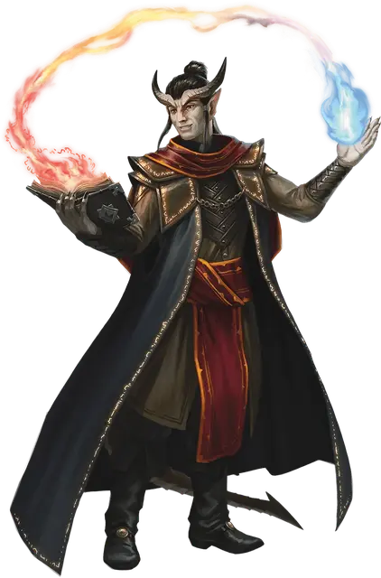

Адепт таинств
Eldritch Adept
Требование: умение «Использование заклинаний» или «Магия договора»

Изучая оккультные знания, вы узнаёте одно из таинственных воззваний из класса колдуна по вашему выбору. Вашей базовой заклинательной характеристикой для этого воззвания может быть Интеллект, Мудрость или Харизма (вы выбираете, когда берёте эту черту). Если у воззвания имеется требование любого вида, то вы можете выбрать это воззвание, только если вы колдун, который соответствует этому требованию.
Каждый раз, когда вы получаете уровень, вы можете заменить воззвание другим из класса колдуна.